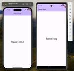

Devlog by Reazon Holdings
https://techblog.reazon.jp/
Devlog by Reazon Holdings
フィード

【Flutter】STG・商用環境を簡単に分ける
Devlog by Reazon Holdings
menu事業部 フロントエンドエンジニアの坂井田です。 業務で開発する際、開発環境と本番環境を分けたいという場面があるのではないでしょうか。 今回は、それをFlutterで実現する方法についてご紹介します！ 環境（Flavor）ごとに設定を分ける方法 はじめに：Flavorを用意する stg.json prod.json 便利な設定：VSCodeでデバッグするFlavorを選択できるようにする 1️⃣ アイコンをFlavorごとに変える flutter_launcher_icons-stg.yaml flutter_launcher_icons-prod.yaml 🍏 Android 🍎 iO…
9日前

Flutterで大量の画像付きリストを快適にスクロールできるようにする
Devlog by Reazon Holdings
menu事業部 フロントエンドエンジニアの坂井田です。 今回は、Flutterで大量の画像付きリストをスムーズにスクロールできるようにするtipsをご紹介します。 背景 結論 （補足）リスト表示について 1. cached_network_image パッケージで遅延読み込み シンプルコード 書き換え後のコード 2. キャッシュを適切に設定する 3. サーバ側で画像を軽量化する 最後に 背景 作成中のアプリには商品を一覧で表示する機能があるのですが、店舗によっては数千規模の商品が登録されている場合があります。 また、このアプリはモバイルネットワークでの運用も考えられるため、なるべくキャッシュを…
20日前
社内で初めてFlutterを採用した話
Devlog by Reazon Holdings
menu事業部 フロントエンドエンジニアの坂井田です。 社内でとある新規開発チームが発足し、私はそのチームで約半年間、ストアリリースの目標に向けて開発を行っておりました。 このプロジェクトは社内初となるFlutterを採用しての開発になりましたので、同じチームで一緒に調査から始めた大口さん・るいさんと共に、その経緯についてご紹介します！ 既存アプリを踏まえた技術選定 決定 最後に 既存アプリを踏まえた技術選定 私は以前ユーザーアプリを開発するチームに所属していたのですが、スクロールしたときのカクツキや画面遷移がスムーズではないなどの課題が何度か挙がっていました。 ユーザーアプリではReactN…
1ヶ月前
動作を検知したらLINEで通知するシステムを作ってみた
Devlog by Reazon Holdings
menu事業部 フロントエンドエンジニアの坂井田です！ 私は現在リモートワークをしていますが、仕事中は会話のためにイヤホンをしていることもあり来客に気づきにくいという問題があります。 家にいるのに再配達 そこで、今回は今持っているものだけを使って来客時に自動通知するシステムを作ってみたので、そのHowToをご紹介します！ 使用した機材 Raspberry Pi 4 Model B 8GB アイ・オー・データのIPカメラ「Qwatch TS-NS110W」 IPカメラはとあるコンテストの副賞でいただいたものを使いました。 一応このカメラ自体には動作検知機能がついています。 しかし通知先のプラット…
9ヶ月前
カメラ申請チャレンジするお話
Devlog by Reazon Holdings
ソーシャルゲーム事業部フロントエンドエンジニアのきのしたです！ 事件 実は自分は社内クラブ制度で📸カメラ部📷所属です！ ただちょっと前に所属していた劇団の公演中に音響・照明・映像卓から持っていた一眼を落とし、💣壊れてしまいました。。。😢(電源がつかなくなった、厳しい) このままではカメラ部なのに、カメラがない。。。💦 。。。あ❕ note.com techblog.reazon.jp techblog.reazon.jp techblog.reazon.jp tech buddyカメラ申請チャレンジ 当たり前ですが、ただ「カメラ📷が欲しい！」という理由だけでは通りません。。。😢 買ったカメラの…
9ヶ月前
koで高速にGoのimage build
Devlog by Reazon Holdings
はじめに 注意 koについて koの利点 Dockerfile不要 docker buildよりも高速 koでできること，できないこと Goのみ 静的ファイルはimageに入れられる imageのpush GitHub Actions その他 最後に はじめに こんにちは，今年の4月に新卒で入社しました，menu事業部で基盤開発ということをやっている窪田と申します． 突然ですが，皆さんは開発でGolangを使っていますか？ もし，Go言語を使われている場合，cloud上のdev/stg/prod環境にデプロイをする際,多くの場合Dockerでimageを作り，pushしていることと思います．（…
1年前
「i」vs「і」ー対戦ー
Devlog by Reazon Holdings
はじめに 社内エンジニアに報告！ 雑談チャンネル投げ、🧹ポイッ🧹 後輩に💪大丈夫そうなURL群💪、教えてもらった 後輩が強すぎた 追記 はじめに ソーシャルゲーム事業部フロントエンドエンジニアのきのしたです！ 先日こんな📜ニュース📜を発見しました。。 gigazine.net 📸画像📷編集フリーソフト✨大手✨のGIMPの😱偽サイト😰が発生しました。。 アルファベットの「i」(アイの小文字)の文字がキリル文字の「і」(❔なんて読むんだ。。❓)で代用された偽サイトURLが発生し、google検索のトップに表示されたようです。。。 (違いがなさすぎる、、、) 🔥ﾊﾞﾁﾊﾞﾁ🔥に🚓危なすぎる。。。🚓報…
1年前
【新卒研修その1】GASを使ってSlackと連携してみよう！ 〜フォームの回答結果を自動で報告するBOTを作る〜
Devlog by Reazon Holdings
研修について GASを使ってみよう！ 値の取得 シートIDについて 連携について 値の設定 カスタムメニューの追加 Slackと連携してみよう！ GASからSlackにメッセージを送信する 1. BOTを作ってトークンを取得する 2. 送信先のチャンネルの設定 メッセージを送信 スタンプ（絵文字）を一緒に送る Googleフォームの回答結果をSlackで自動通知する おわりに 今年の春に新卒で入社し、現在menuユーザーチームのフロントエンドエンジニアとして勤務している坂井田です🍴 この記事はレアゾンで働くことに興味を持ってくださっている方に向けて、 新卒研修ってどんなことをやるの？ 実際に研…
1年前
React Native Matsuri2022に登壇します！
Devlog by Reazon Holdings
こんにちは。林です。 スプラ3ではスシを握ってバンカラ街のシミになってます。 今年もReact Native Matsuriが開催されます！ RNのイベントでは国内最大のイベントで、React Nativeを学びたいエンジニアには必見の内容となっております。 そしてなんと今年はmenuがイベントのスポンサーとして協賛しており、エンジニア2名が登壇します👩🎤 ノベルティもご用意しているので、ぜひご参加ください！ reactnative-matsuri.com （ここにmenuの名前が並ぶのが正直嬉しい） menuエンジニアの登壇情報 menuアプリに、Firebase Remote Confi…
1年前
Google Maps Platform ウェビナーに登壇しました
Devlog by Reazon Holdings
Google様主催ウェビナー 「配送エクスペリエンスを高度化する最新機能を学ぶ」に 弊社メンバー CTO 丹羽 PdM 木代 Eng 藤崎 がセッション参加させていただきました。 cloud.google.com menuクルーアプリは開発/ビジネスサイド/クルーの皆様と一丸になり、より良いものを作り上げることを目指しています。 そんな中今回のウェビナーで取り上げたODRD(On-demand Rides and Deliveries)に関してもGoogle様と協力体制で開発を進めています。 プロダクト面/技術面でも常にチャレンジしていきます！！ 弊社では様々なポジションのエンジニアを募集して…
2年前
テレビ史に残る名場面を3Dプリンタで再現してみたお話
Devlog by Reazon Holdings
ソーシャルゲーム事業部フロントエンドエンジニアのきのしたです！ 伝説 2016年2月24日、とある伝説が放送されました。 youtu.be ↑のように💪筋肉が屈強なお方💪ととても📗読書好きなお方📖が宣伝する椅子を座って破壊しました 。。。。この✨伝説✨を再現してみたい！ 再現 再現したい！といってもそのまま再現するのでは💣破壊活動💣と同様です。。。 椅子を破壊するのは💰財力的💰にも💪力的💪にも、様々な方面から見てもアウトです。。 どうしましょう。。。。 。。。！！ 方法 弊社には3Dプリンタがあります！！！ （3Dプリンタで⛩神⛩を作りました。デスクの隣が⛩神⛩の席になりそう） techblo…
2年前
Google Maps Platform ウェビナーに弊社メンバーが登壇します！
Devlog by Reazon Holdings
menu開発のメンバー PdM 木代 エンジニア 藤崎 がGoogleさん主催のGoogle Maps Platform ビジネス活用ウェビナーに登壇します。 詳細はこちら mapsonair.withgoogle.com ぜひご参加ください！
2年前
Galaxyの最新スマホ S22 Ultra 5G を1ヶ月使ってみた感想！【月が撮れるカメラ】
Devlog by Reazon Holdings
はじめに 端末について 購入した端末のスペック 👜 サイズ感 🔋 バッテリー ✏️ 内蔵Sペン 🖥 外部出力モード（Samsung DeX） 📦 スマホケース 🏃♂️ Antutuベンチマーク カメラ性能 🔭 ズーム ✨ 1億800万画素モード カメラ比較 🌝 月 🌃 夜景 🔦 暗所 まとめ はじめに こんにちは。 今年4月に新卒で入社しました、menu事業部 フロントエンド所属の坂井田です。 この度初めて社内制度 Tech buddy で、以前より気になっていたスマホを申請させていただきました。 使用から1ヶ月が経過し、驚いたことも多くありましたので所感をまとめます！ Tech buddy…
2年前
アプリのインストールなんて要らない！！開発ソフト無しでファイルのスクレイピングをやってみよう
Devlog by Reazon Holdings
技術者に愛されし業界 ― InformationTechnology 隆盛を極めた彼の地は、技術者たちによって築かれた だが―― いまや技術者はICT機器運用ルールによってその輝きを失い そして仕事がしづらくなる企業もでてきた NaoAkakura 著 「回顧録『情報のテクノロジー』」より*1 はじめに わたしについて はじめまして、ソーシャルゲーム事業部バックエンドエンジニアのあかくらです 初めてこちらに寄稿させていただきます、よろしくお願い致します 本記事の概要 本記事をご閲覧頂いている方の中には、就労先で貸与されているPCについて、 ソフトウェアのインストールがICT運用ルール等で許可さ…
2年前
弊社エンジニアがイベント登壇します
Devlog by Reazon Holdings
menuプロダクト エンジニアマネージャーの林がイベント登壇します！ standfm.connpass.com React Native/ReactのイベントでReact Native for Webの導入事例をセッションとなります。
2年前
Tech buddyで会社の中に畑を作りたいお話
Devlog by Reazon Holdings
ソーシャルゲーム事業部フロントエンドエンジニアのきのしたです！ 最近思ったこと 最近✨メタバース✨が話題になり、仮想世界で人と触れ合ったり、遊んだりするのが流行っていますね！！ とある記事では放課後の遊びが現実世界ではなく、仮想世界で遊ぶ！となっているみたいです japan.cnet.com このままの勢いではお仕事も学校も、ありとあらゆるものの大半が仮想世界で行われる可能性が高そうな気がします、 仮想世界ではできないもの 技術の力であらゆるものが仮想世界に移行されそうな感じがしますが、仮想世界ではできないことがあります、、、 それは食事です！ いくら仮想世界でいろんなことができても物理的なも…
2年前
GPD Pocket3の紹介
Devlog by Reazon Holdings
はじめに 初めまして、ゲーム開発部所属の木﨑です。 小型PC 「GPD Pocket3」が発売されましたね。 GPD Pocket3 gpd-direct.jp GPD Pocket3は8インチの小型PCながら、大きなトラックパッド、180度回転するヒンジを備えています。 また、PC性能も良く最強に見えます。 さっそくTech buddy制度で注文しましたので紹介します。 良いところ 入力インターフェースの配置 左にクリックボタン、右にトラックパッドがあります。 そのため両手持ちをし、左手でクリック、右手でトラックパッドの操作ができます。 また、両手持ちをした場合でも、全てのキーを押すことがで…
2年前
会社で「神」を動かすのに必要な部品を触ったお話
Devlog by Reazon Holdings
ソーシャルゲーム事業部フロントエンドエンジニアのきのしたです！ 前回までのあらすじ Tech Buddyで賽銭箱を手に入れて、💪神作った💪 作った神 神の力を実装していきたいと思った 神の力 現状の神の問題 最初に作る神の力を考えなければ、作っていくことができません、、、 現状の神セットは✨出力した神✨と賽銭箱だけです 賽銭箱と神とセットでそのまま置いておくだけでは神は近場の状況を把握して、近場のみしか守ってくれません、、 このままでは神は会社内の状況を把握できず、守ってくれません、、、、 守ってくれるようにする神の力 守ってくれるようにするには神が動けるようにして、🌀見回り🌀することです な…
2年前
続・広告運用改善に向き合うエンジニアの取り組み
Devlog by Reazon Holdings
こんにちは。アドテク事業でエンジニアをしている星野です。 主に広告配信・運用システムの開発を担当しています。 今回は、以前紹介いたしました弊社広告配信システムにおける広告配信最適化の取り組みについての記事の続きになります。 はじめに 私が担当している広告配信システムでは、主に純広告を扱っています。 純広告とは、特定のメディアの広告枠を買い取って掲載する広告のことです。 メディアから買い取った広告枠の掲載期間におけるインプレッション数（表示回数）を広告在庫と呼びます。 純広告では、この広告在庫を効果的に消費してクライアント様の商品を購入してもらうなどの目的を達成（コンバージョン）する必要がありま…
2年前
会社で「神」を生成するために3Dプリンタを触っているお話
Devlog by Reazon Holdings
ソーシャルゲーム事業部フロントエンドエンジニアのきのしたです！ 現在、Tech buddyを使って会社内に神社を作っています 前回までのあらすじ Tech buddyを使って賽銭箱を手に入れたが、神と鳥居がTech buddyで手に入れることができなかった それらを手に入れるために社内にある3Dプリンタを開け、テストを行った 「神」を生成する 「神」の設計 3Dプリンタで「神」を生成するには一回設計する必要があります、 会社にある3Dプリンタは公式サイトから簡単な3Dモデリングを行うアプリがありました のでダウンロードして設計していきます 神のモデリング 長方形のオブジェクトの大きさや角度、位…
2年前
ドラゴンスマッシュチームのリモートワーク状況
Devlog by Reazon Holdings
はじめまして！ゲーム事業部にてクライアントエンジニアをやっています丸山です。 このコロナ禍の中、みなさんどのように開発をしていますでしょうか？ 10月から東京での緊急事態宣言も解除されましたが、各社リモートワークを継続するところもあれば、出社になるところもあり、会社によって動きが分かれているようですね。 弊社でもリモートワークについては、チームの状況によって最適な方法を選択するということで、チームごと方針が違います。 その中でも今回はドラゴンスマッシュのチームの状況についてのお話です。 ドラゴンスマッシュチームのメンバーは、基本的にはフルリモートにて業務を行っております。 元々は週1で全員集ま…
2年前
会社で「神」を生成するために3Dプリンタを開封したお話
Devlog by Reazon Holdings
はじめまして、ソーシャルゲーム事業部フロントエンドエンジニアのきのしたです！ ⛩神社⛩を作ってみたい 自分は学生時代、京都で過ごしていた時期がありましたので、ふらっと大きな神社に行くことが多々ありました (好きな神社は貴船神社です) 現在は会社のある東京に過ごしているため、ふらっと大きな神社に行くことが難しくなりました、とても寂しいです なので、 会社に神社を作れば良いのでは…！？ と思い、神社を社内に作ります 神社といえば… 神社といえばまず最初に思うのが賽銭箱と鳥居と神ですね、 賽銭箱はTech buddyの利用限度額内に収まって🎉購入できました🎉 次に必要なのは神と鳥居ですね、 しかし神…
2年前
エンジニア向け福利厚生制度「Tech buddy」の話
Devlog by Reazon Holdings
どうも。 開発本部VP 工藤です。 主に開発本部全体の人事/採用/管理周りとmenuプロダクトでEMを担当しています。 今回は福利厚生制度「Tech buddy」に関してお話しさせていただきます。 Tech buddyとは まずはこちら広報メンバーの記事からご紹介させていただきます。 note.menu.inc Tech buddyは記事にある通りCTOの “エンジニアは常に好奇心の塊であってほしい”という想いから作られた制度です。 Techbuddyロゴ ロゴかっこいいですね！ デザイナーの方が作ってくれました。 ものづくりサポート制度概要 制度のひとつ、ものづくりサポート制度の紹介をさせて…
2年前
内定者アンケートとインターンについて
Devlog by Reazon Holdings
はじめに 概要 インターン活動内容 内定者アンケート ・就活中に感じたREAZONのイメージ ・最終的にREAZONを選んだ決め手 ・メインのプログラミング言語や分野 ・短中期的に習得したい技術や分野、言語など ・どういうエンジニアになりたいか ・今後の目標 インターンへの追加アンケート ・インターン参加後のREAZONの印象 ・インターン自体の印象 ・未来の就活生やインターン生へのメッセージ 最後に はじめに こんにちは！menuバックエンドエンジニアの渕上です。 僕は22卒内定者として、7月8月と内定者インターンをしたのち、9月より早期正社員登用を受けて現在menuに所属しております。 先…
2年前
Google Apps Script（GAS）で自動化
Devlog by Reazon Holdings
はじめまして。日々メンバーの業務を仕組み化・自動化・効率化している社内システム改善エンジニアの桑原です。 プロモーション・広告代理業を行う事業部内に点在する属人的な作業や労働集約的な作業をシステムの力を用いて仕組み化・自動化・効率化を行っていくという事をメインに業務を行っています。 本日は、私が自動化の際に多用しているGoogle Apps Script（GAS）について簡単にですが紹介させていただこうと思います。 Google Apps Script（GAS）とは Google Apps Script（長いので、以下GASと記載します）とは、読んで字の如くあの有名なGoogleが開発・提供し…
2年前
menuフロントエンドの開発環境（2021秋）
Devlog by Reazon Holdings
はじめに こんにちは！menuフロントエンドエンジニアの林です。 好きな卍解は黄煌厳霊離宮です。五等分の花嫁だと二乃が好きです。よろしくお願いします。 最近、フロントエンドの候補者の方とお話する中で、弊社での開発環境や利用している技術についての質問をよくいただきます。 なので今回はこの場をお借りして、menuフロントエンドでの開発環境や利用している技術についてご紹介します！ 言語・FWなど React Nativeでアプリケーションを作成しています。開発の初期からTypeScriptを導入しているため、型のある世界での実装をお楽しみいただけます。 React Nativeでの開発（の大部分）は…
2年前
menu開発チームの課題改善
Devlog by Reazon Holdings
はじめに プロジェクト進行について 負荷対策について 安定運用するためのツール導入 今後の課題について はじめに こんにちは。menu開発チームのサーバエンジニアリーダー兼PM業務サポートの友兼です。 menu開発チームは少人数のエンジニアチームとしてスタートしました。 当初はテイクアウトアプリとして様々な機能を試しながら開発を行なっていました。 そして2020年の4月に本格的にデリバリー機能も追加され、この1年でユーザが急激に拡大しました。 それに伴いチームに様々な変化があり、その変化に対応すべく業務改善を行ってきました。 主にタスク管理とサーバエンジニアとしてのツール導入などの改善のお話を…
3年前
ドラゴンスマッシュのクライアント開発環境のご紹介
Devlog by Reazon Holdings
はじめまして！ゲーム事業にてUnityエンジニアをしている半沢です。 ゲーム事業では複数のタイトルの開発・運用が行われているのですが 今回は、現在運用中のタイトルであるドラゴンスマッシュについて、 主にクライアント周りの開発環境をご紹介させていただきます。 開発ツール まずは、開発ツールの全般を紹介させていただきます。 開発エンジン ドラゴンスマッシュにおいてはUnityを使用して開発しております。 IDE 基本的には各自好きなものを使用してOKですが、 だいたいの方が以下の2つを使用しております。 Rider Visual Studio CI CIにはJenkinsを使用しております。 コー…
3年前
広告運用改善に向き合うエンジニアの取り組み
Devlog by Reazon Holdings
こんにちは。アドテク事業でエンジニアをしている星野です。 主に広告配信・運用システムの開発を担当しています。 今回は、弊社広告配信システムにおける広告配信最適化の取り組みについてご紹介します。 背景 私が担当しているプロダクトでは、広告配信時に配信設定されている複数のクリエイティブから各配信割合に基づいて配信するクリエイティブを決定しています。 この配信割合の決め方は次のように複数通りあります。 均等：満遍なく配信する クリック/コンバージョン重視：クリック数やコンバージョン数を最も多く獲得できるように調整する カスタム：重みを設定して、特定のクリエイティブが頻繁に配信されるようにする 当プロ…
3年前
インターン入社〜新卒入社後の業務内容の変化
Devlog by Reazon Holdings
はじめに はじめまして！ 21卒 menuサーバーサイドエンジニアの谷地と申します。 本記事では、私の実体験と共に、弊社でのインターン、新卒としての業務内容の変化についてご紹介します！ 〜インターン 当時イベントで面談した際にはあまり弊社を知りませんでした。 なので不安もありましたが、面談を通して弊社の「世界一の企業へ」というビジョンに向けたホールディングス全体の熱量を感じ、 年齢関係なく挑戦できる環境で成長したいと思い内定承諾をさせていただきました。 その上でインターンをさせていただけることになりました。 インターン〜入社まで 業務内容 主な内容は下記となります。 技術のキャッチアップとイン…
3年前